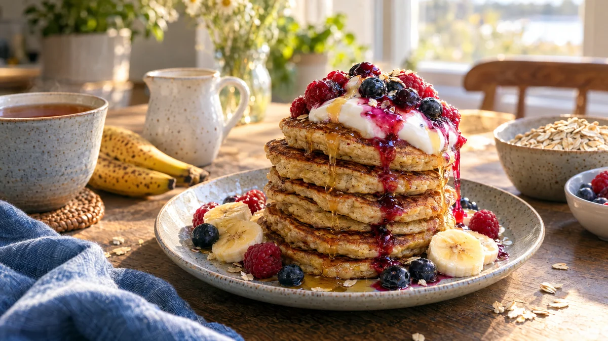

RESTFEST · RECEPTMellanmål · Frukost & brunch
Små bananplättar med havre och kanel
Två brunfläckiga bananer, två ägg och en näve havregryn mixas till en tjock smet som steks till små, gyllene plättar som doftar banankaka. De staplas i höga torn med yoghurt och bär. Lika bra som mellanmål efter skolan som till helgfrukost, och helt utan tillsatt socker.
- Förberedelse
- 5 min
- Tillagning
- 15 min
- Portioner
- ca 16 små plättar (2–3 portioner)
- Nivå
- Nybörjare
 Det här behöver du
Det här behöver du
Tryck på + vid det du behöver köpa.
Plättar
Till servering
Gör så här
- Mixa bananer, ägg, havregryn, bakpulver, kanel och salt slätt med en stavmixer.
- Låt smeten vila i 5 minuter, så att havren sväller och smeten tjocknar.
- Smält lite smör i en stekpanna på medellåg värme. Klicka ut smeten, ca 1 msk per plätt.
- Stek plättarna 1–2 minuter per sida, tills de är gyllenbruna och har stelnat. Ha inte för hög värme, bananen bränns lätt innan mitten har satt sig.
- Lägg de färdiga plättarna under en kökshandduk medan du steker resten.
Dekoration och servering
- Stapla 5–6 plättar i ett högt torn på varje tallrik.
- Toppa med en klick yoghurt, tinade bär som rinner ner längs sidorna och en tunn stråle honung.
- Plättarna är goda även kalla, och fungerar fint i matlådan.
- Använd havregryn märkta glutenfria om plättarna ska bli helt glutenfria.
- Överblivna plättar håller 2 dagar i kylen och kan frysas.
Mått och ugnstemperaturer
Måtten är svenska (dl, msk, tsk, krm). Ugnstemperaturerna gäller vanlig ugn med över- och undervärme; med varmluft, sänk med 20 grader.